Notre histoire, nos valeurs, et l'équipe qui vous représente au quotidien au CH Charles Perrens.
Congés payés, Sécurité sociale, salaire minimum : rien de tout cela n'est tombé du ciel. Ce sont des conquêtes syndicales. Découvrez 130 ans de luttes, pourquoi il existe plusieurs syndicats, et pourquoi la psychiatrie est un combat syndical.
Lire l'histoire de la CGT →[TEXTE À COMPLÉTER — ce qui distingue l'approche de la section : défense individuelle systématique, priorité donnée aux conditions de travail en psychiatrie, indépendance vis-à-vis de la direction, fonctionnement collectif.]
Vos représentants CGT au CH Charles Perrens.
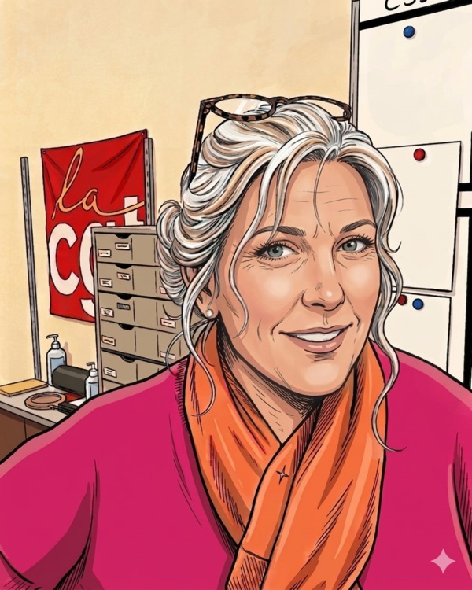
Aide-soignante du pool
Infirmière coordinatrice en ETP à l'UTEP
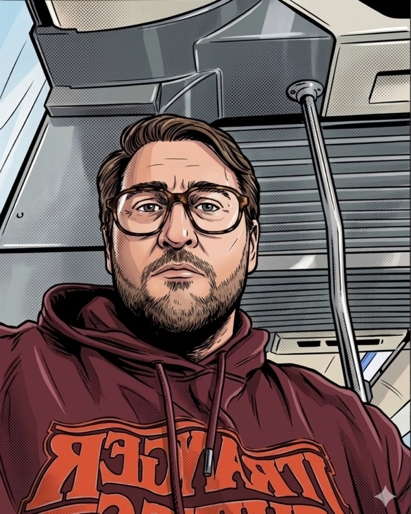
Aide-soignant sur C2
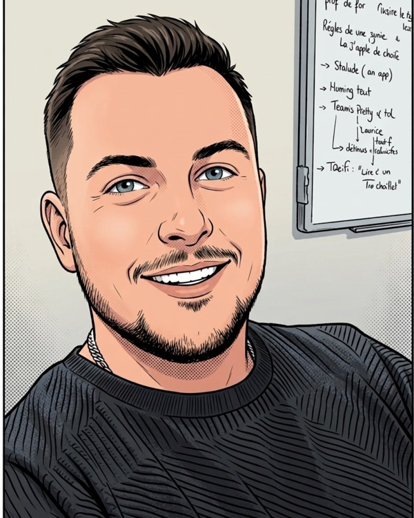
Responsable du parc auto/vélo
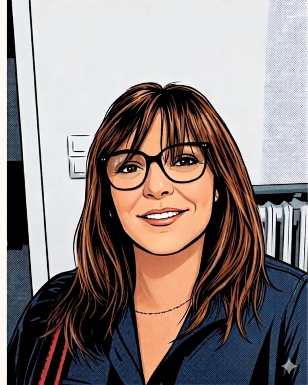
Cadre de santé IDE (Cellule stage & Analyse des pratiques)
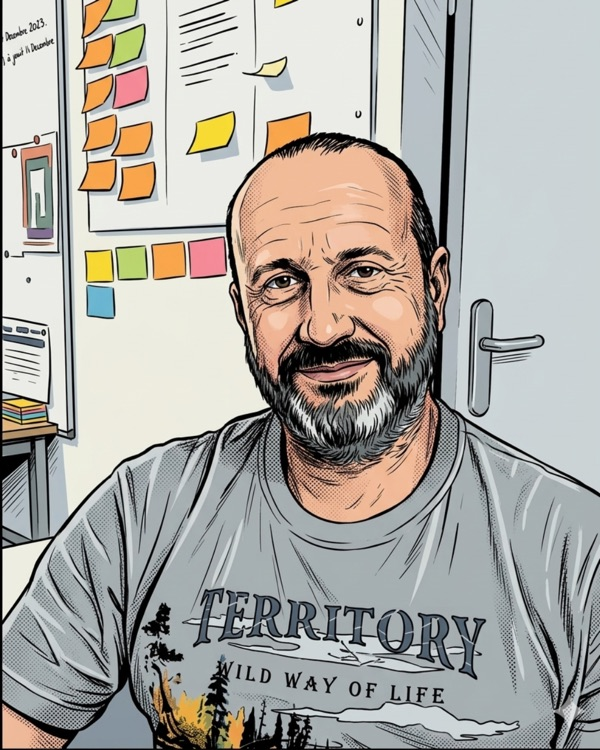
Ouvrier professionnel qualifié (Espaces verts)
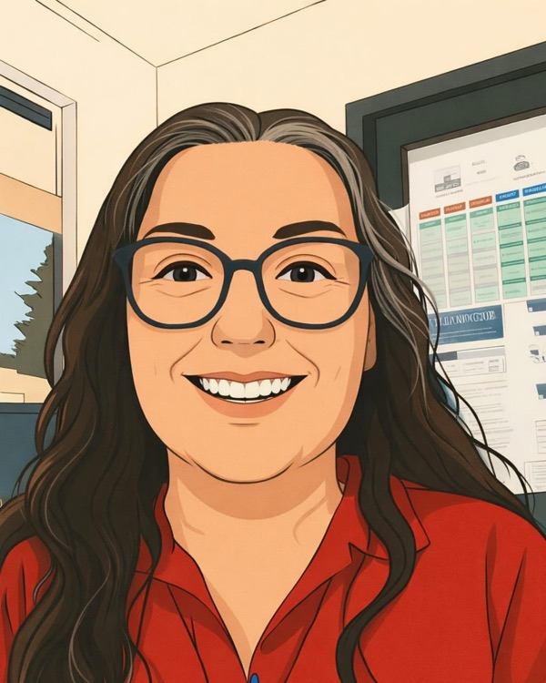
Agent de sécurité au standard
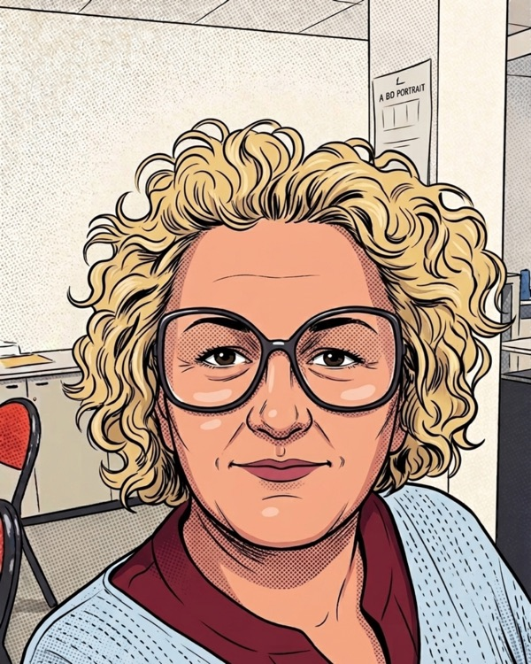
Infirmière à la DU, coordinatrice JLD
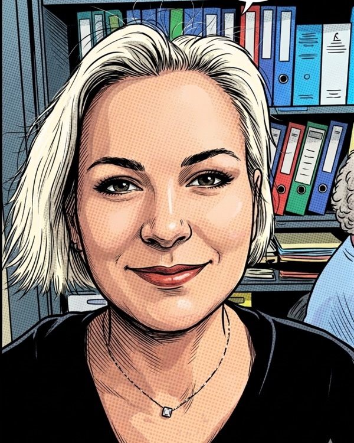
Aide-soignante à SUAB (Pôle UNIVA)
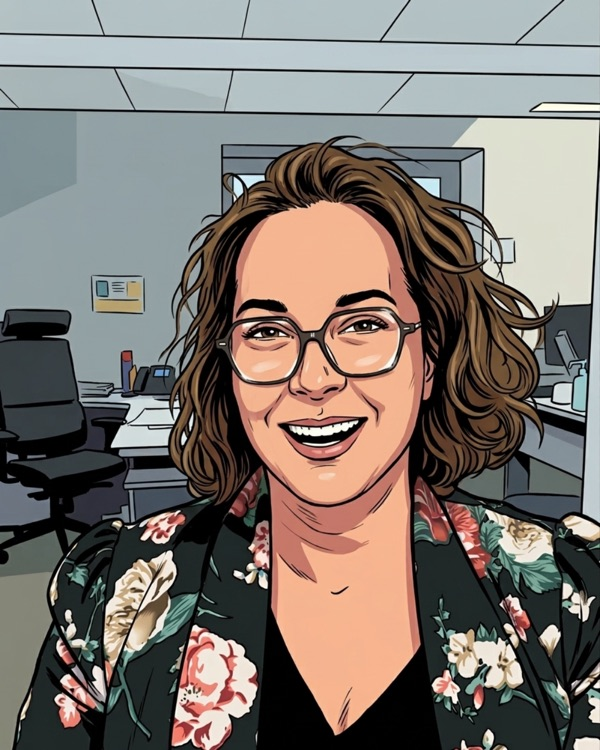
Responsable des Services intérieurs (déchets et nuisibles, transformation écologique)
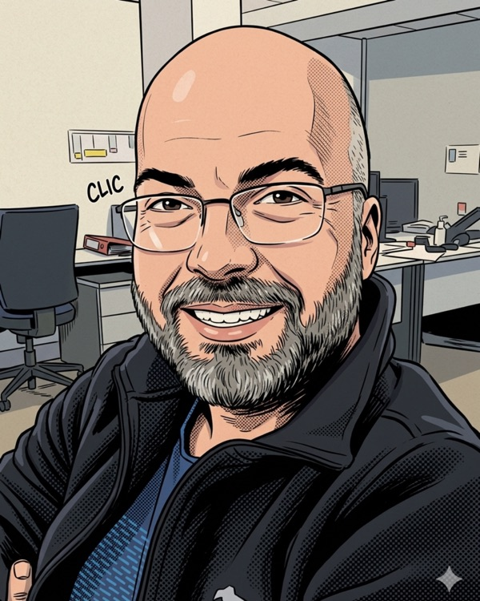
Régulateur des transports sanitaires
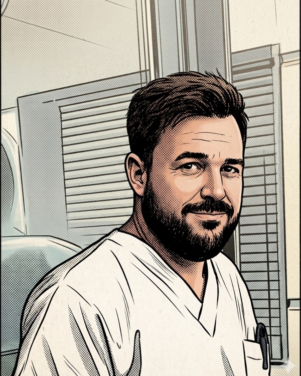
Aide-soignant à la MAS
Infirmier au SECOP
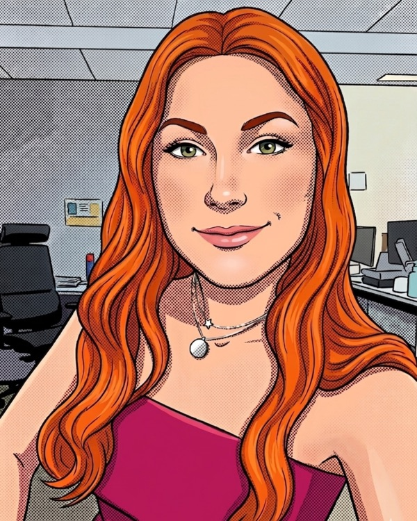
Infirmière à la post-urgence mineurs (PUMA)
Syndiqué ou non, notre porte vous est toujours ouverte.
cgt@ch-perrens.fr · 05.56.56.35.65 · 07.68.03.34.15 · Facebook.com/CGT.Perrens · @cgt.perrens